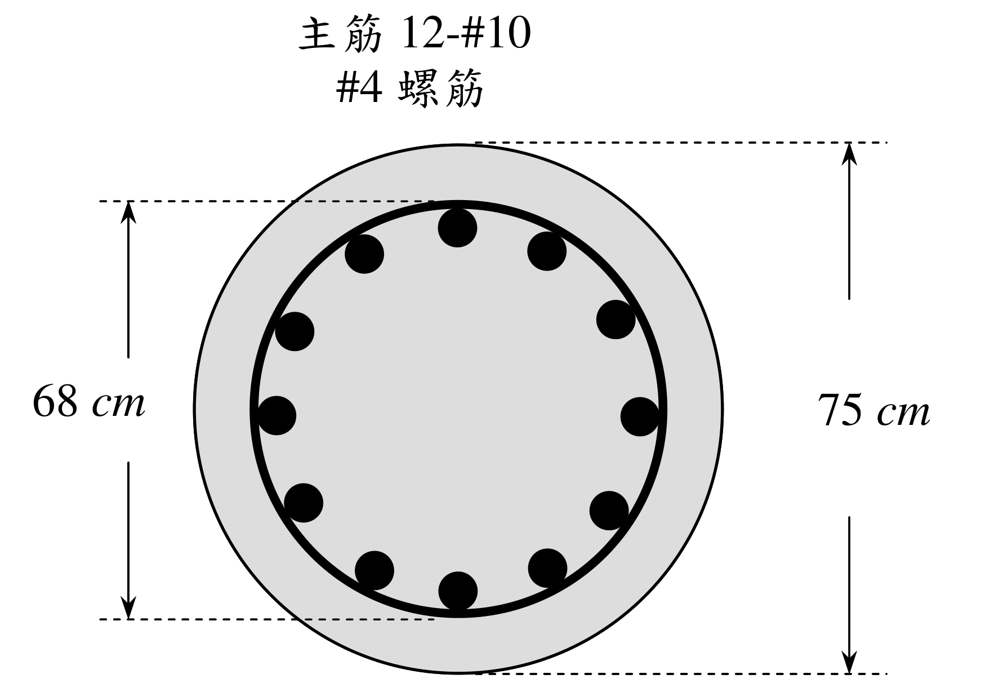
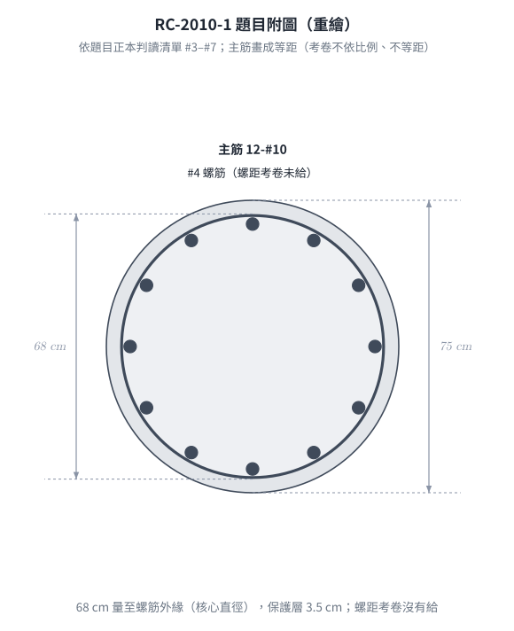
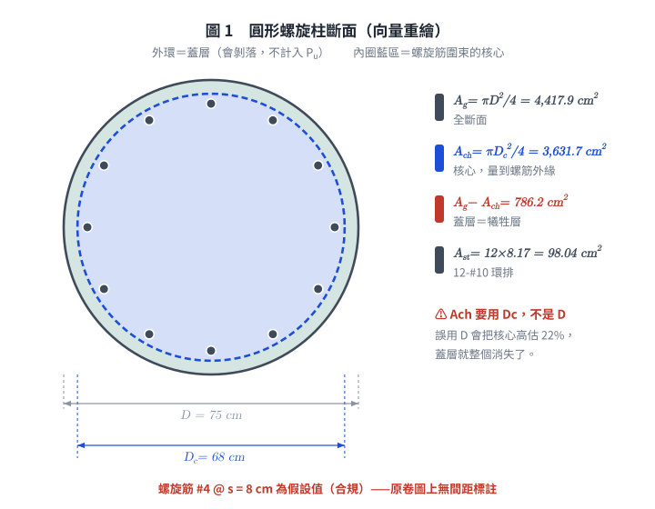
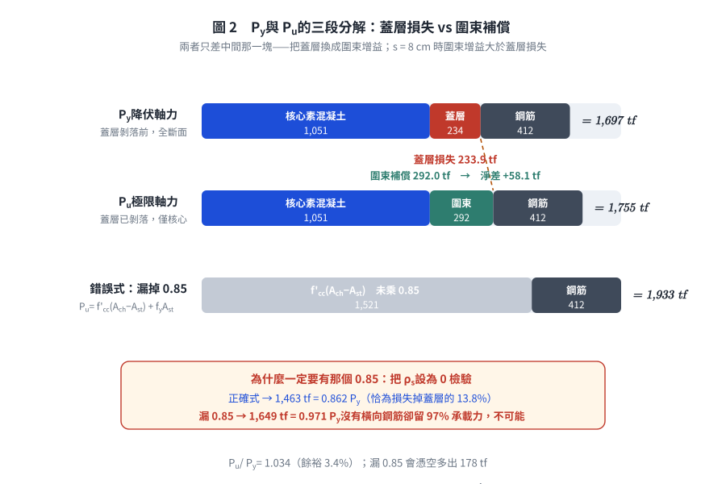
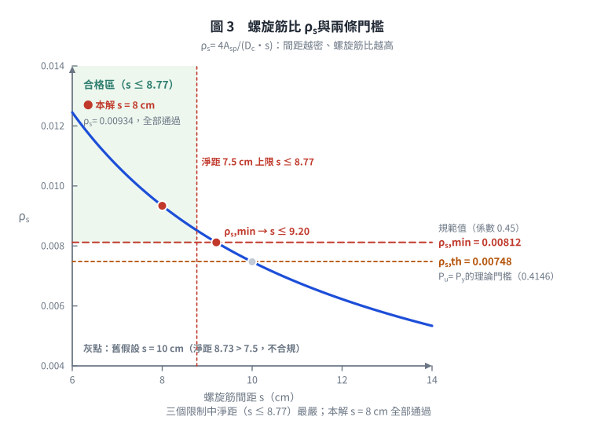

📄 題目正本：考卷原文・附圖・判讀清單（已確認）
RC-2010-1 題目正本
本檔只記錄考卷上寫了什麼、圖上畫了什麼，不含任何解法。解析見同資料夾
RC-2010-1.md。
判讀清單已經使用者確認（凍結）；本檔原則上不再修改（改動須回考卷原圖並記 log）。
| 項目 | 內容 |
|---|---|
| 考卷 | raw/exams/RC-2010_鋼筋混凝土設計與預力.pdf 第 1 頁（正面），第一題 |
| 考年 | 民國 99 年（2010） |
| 配分 | 40 分 |
| 附圖 | RC-2010-1-fig-2.png（500 dpi 重新擷取）；既有 RC-2010-1-fig-1.png 核心內有滑鼠游標壓在鋼筋旁，保留不刪 |
| 判讀狀態 | 已確認（2026-11-14 使用者確認；不確定項照草稿判讀定案（#1 螺距須自行假設；#2 採讀法①）；轉錄 2026-11-14；PyMuPDF 110 dpi 全頁目視＋抽出文字核對，附圖 400／500 dpi 放大，尺寸線端點讀 PDF 向量座標；盲讀後才比對既有解析） |
1. 考卷原文（逐字）
一、試檢核鋼筋混凝土圓柱（如圖所示）所能承受之降伏軸力 $P_y$ 與極限軸力 $P_u$。已知 $f'_c$ = 350 kgf/cm²，$f_y$ = 4,200 kgf/cm²，#4：$A_s$ = 1.27 cm²，#10：$A_s$ = 8.17 cm²。（40 分）
2. 考卷給的公式、附表與參數
- 題文數值：$f'_c=350$、$f_y=4200$ kgf/cm²；#4 $A_s=1.27$ cm²；#10 $A_s=8.17$ cm²。
- 沒有給：螺筋間距（螺距）$s$、$P_y$ 與 $P_u$ 的定義、$E_s$、強度折減因數、#4 與 #10 的直徑。
- 卷首注意事項：㈠可以使用電子計算器。㈡不必抄題，作答時請將試題題號及答案依照順序寫在試卷上，於本試題上作答者，不予計分。㈢以下各計算題依規範所需之公式或物理參數等，請自行推知或合理假設。
3. 附圖

圖面文字照錄：「主筋 12-#10」「#4 螺筋」「68 cm」「75 cm」。
4. 判讀清單
| # | 項目 | 判讀 | 圖上／題文依據 | 把握 |
|---|---|---|---|---|
| 1 | 螺筋間距 | 考卷沒有給。若 $P_u$ 要計入螺筋圍束效果或要檢核螺筋量，須自行假設 $s$ | 題文、圖面均無；卷首㈢「請自行推知或合理假設」 | 不確定（影響答案，請確認）；使用者確認 |
| 2 | $P_y$、$P_u$ 的意思 | 考卷未定義。可能讀法：①$P_y$＝鋼筋降伏時（混凝土 $0.85f'_c$）之同心軸力 $0.85f'_c(A_g-A_{st})+f_yA_{st}$，$P_u$＝保護層剝落後核心受螺筋圍束之極限軸力；②$P_u$＝規範設計軸力上限 $\phi P_{n,\max}$ | 題文「降伏軸力」「極限軸力」，無公式 | 不確定（解讀）（影響答案，請確認）；使用者確認 |
| 3 | 外徑 | 75 cm（全斷面） | 右側尺寸線引線切於外圓上下緣（PDF 外圓直徑 135.0 pt，引線 y＝353.7／489.7） | 確定 |
| 4 | 68 cm 的量測基準 | 螺筋外緣至外緣（核心直徑 $D_c$），非鋼筋中心圓 | 左側尺寸線端點 y＝368.6／475.7（107.1 pt）＝螺筋中心線直徑 104.6 pt＋線寬 2.25 pt（外緣 106.9 pt） | 確定 |
| 5 | 保護層 | $(75-68)/2=3.5$ cm（至螺筋外緣），由 #3、#4 推得，考卷未直接標 | 尺寸 | 確定 |
| 6 | 主筋 | 12-#10，$A_{st}=12\times8.17$ cm² | 圖面文字；數圓點 12 | 確定 |
| 7 | 圖不依比例 | 75 cm 畫成 135 pt（1.8 pt/cm），68 cm 卻只畫 107 pt；主筋畫得不等距 | PDF 座標 | 確定 |
| 8 | 載重型式 | 同心軸壓（題目只問軸力） | 題文 | 確定（解讀） |
| 9 | 考卷沒有給 | $E_s$、鋼筋直徑、$\phi$ 需自行採用 | 題文 | 確定 |
轉錄：2026-11-14（RC-U1-2 題目正本推廣・批 1）
確認：2026-11-14 使用者確認（RC-U1-2 題目正本推廣・批 1，關卡一）
考題編號：RC-2010-1
主分類： RC-U1-2 RC 柱強度分析與設計
副分類： 無
設計法： USD 強度設計法
標籤： 圓形螺旋柱 降伏軸力 極限軸力 螺旋筋圍束 圍束混凝土強度 ρs最小值 f'cc fL側向圍束壓力 Pu≥Py檢核 12根主筋
1. 題目（考卷原文見題目正本）
考卷原文、公式／附表、附圖與判讀清單（已確認）見
RC-2010-1-problem.md。本節只列解題時最容易讀錯的地方與本解使用的記號；題意以題目正本為準。

重繪自考卷附圖，依題目正本判讀清單；攔下把 68 cm 當鋼筋中心圓或全斷面、以及以為考卷給了螺距的錯誤。
常見誤讀
| 項目 | 正確判讀 | 常見誤讀 |
|---|---|---|
| 68 cm 的基準 | 螺筋外緣至外緣＝核心直徑 $D_c$（判讀 #4），保護層 3.5 cm | 當成主筋中心圓直徑，或把 $A_{ch}$ 算成全斷面 |
| 螺距 $s$ | 考卷沒有給（判讀 #1）；本解假設合規的 $s=8$ cm（須同時滿足 $\rho_{s,\min}$ 與螺筋淨距 ≤ 7.5 cm，2026-11-14 使用者定案） | 當成題給（同卷第二題標了「D13 @ 10 cm」，那是另一題）；或假設不合規的 $s=10$ cm 再判「不符規範」（舊版解析） |
| $P_y$、$P_u$ | $P_y$＝全斷面 $0.85f'_c(A_g-A_{st})+f_yA_{st}$；$P_u$＝保護層剝落後核心受螺筋圍束之極限軸力（判讀 #2 讀法①） | 把 $P_u$ 當成規範設計上限 $\phi P_{n,\max}$ |
本解記號： $D=75$ cm、$D_c=68$ cm；$A_g=\pi D^2/4$、$A_{ch}=\pi D_c^2/4$；$A_{st}=12\times8.17$ cm²；螺筋 $A_{sp}=1.27$ cm²、$s=8$ cm（假設，合規）；$f'_c=350$、$f_y=4200$ kgf/cm²。
判讀圖解（解析自繪）

圖 1 圓形螺旋柱斷面（向量重繪）。$A_{ch}$ 用的是螺旋筋外緣直徑 $D_c = 68$ cm 而非全斷面 $D = 75$ cm——誤用 $D$ 會把核心高估 22%、蓋層直接消失，$P_u$ 與 $P_y$ 的比較就整個失去意義。
2. 考題核心精神與出題者意圖 (Core Concepts & Examiner's Intent)
核心觀念： 螺旋柱的延性機制：
- $P_y$（降伏／蓋層破壞）：外圍蓋層混凝土達到極限應變後開始剝落，以全斷面計算
- $P_u$（圍束極限）：蓋層脫落後，螺旋筋提供側向圍束壓力 $f_L$，使核心混凝土強度提升至 $f'_{cc}$
- 設計要求：$P_u \ge P_y$（螺旋筋補償蓋層損失）；規範以 $\rho_s \ge \rho_{s,\min}$ 並加上螺筋淨距限制來保證
出題者意圖：
- 測驗兩個不同強度（蓋層 vs. 圍束核心）的物理意義
- 測驗螺旋筋體積比 $\rho_s$ 的計算與規範檢核（最小量、淨距）
- 測驗圍束強度 $f'_{cc}$ 的計算
- 考卷未給螺距 → 測驗能否自行假設一個合規的螺距再計算
3. 解題戰略地圖與陷阱分析 (Strategic Roadmap & Trap Analysis)
作戰計畫：
- 計算各斷面幾何（$A_g$、$A_{ch}$、$A_{st}$）
- 計算 $P_y$（全斷面，用 $0.85f'_c$）
- 決定螺距：同時滿足 $\rho_s\ge\rho_{s,\min}$（$s\le9.20$）與淨距 $\le7.5$ cm（$s\le8.77$）→ 假設 $s=8$ cm
- 計算 $\rho_s$、$f_L$、$f'_{cc}$、$P_u$（核心斷面，同樣要乘 $0.85$）
- 比較 $P_u$ 與 $P_y$，作出結論
關鍵陷阱：
| 陷阱 | 說明 | 應對 |
|---|---|---|
| ❶ $\rho_s$ 的分母是核心，量到螺筋外緣（$D_c$） | 與 $A_{ch}$ 同一基準，才能和 $\rho_{s,\min} = 0.45(A_g/A_{ch}-1)f'_c/f_{yt}$ 對接，也才保得住 $f_L = \rho_s f_{yt}/2$ | $\rho_s = 4A_{sp}/(D_c\,s)$ |
| ❷ 不可把分母換成螺筋中心距 $D_c - d_b$ | 與量到外緣的 $A_{ch}$ 混用兩套基準，偏不保守 | 核心一律量到外緣 |
| ❸ $P_y$ 用 $0.85f'_c$ 的理由不是 Whitney 應力塊 | $0.85$ 是「圓柱試體強度 → 構材內實際強度」的折減 | 純軸壓也要乘，核心混凝土同樣要乘 |
| ❹ $P_u$ 不可漏掉 $0.85$ | 寫成 $f'_{cc}(A_{ch}-A_{st}) + f_yA_{st}$ 時，$\rho_s = 0$ 會得 $0.97P_y$，物理上不可能 | 見 Step 4 |
| ❺ 假設的螺距本身要合規 | 只檢核 $\rho_{s,\min}$、漏了淨距 7.5 cm 上限；或假設一個不合規的 $s$ 再判「不符規範」——那是自己造成的 NG，不是題目的性質 | 先列出 $s$ 的規範上限，再取合規值 |
3.5 變數層次分析 (Variable Hierarchy Analysis)
複習提示：第一次解題後，在每個卡住的知識點旁標記
⚠；第二次複習時只看有⚠的項目。
最終目標
降伏軸力 $P_y$（全斷面）與極限軸力 $P_u$（蓋層剝落後、核心受螺筋圍束）。
本題關鍵公式（依計算順序）
$$\text{Step 1：} A_g = \frac{\pi D^2}{4},\quad A_{ch} = \frac{\pi D_c^2}{4},\quad A_{st} = 12\times8.17$$
$$\text{Step 2：} P_y = 0.85f'_c(\boxed{A_g} - \boxed{A_{st}}) + f_y \boxed{A_{st}}$$
$$\text{Step 3：} s \le \min\!\left(\frac{4A_{sp}}{\rho_{s,\min}D_c},\; 7.5 + d_b\right),\quad \rho_{s,\min} = 0.45\!\left(\frac{\boxed{A_g}}{\boxed{A_{ch}}} - 1\right)\!\frac{f'_c}{f_{yt}}$$
$$\text{Step 4：} \rho_s = \frac{4A_{sp}}{D_c\, s},\quad f_L = \frac{\rho_s f_{yt}}{2},\quad f'_{cc} = f'_c + 4.1\boxed{f_L}$$
$$\text{Step 5：} P_u = \underbrace{0.85f'_c(\boxed{A_{ch}} - \boxed{A_{st}})}_{\text{核心素混凝土}} + \underbrace{4.1\boxed{f_L}\,\boxed{A_{ch}}}_{\text{圍束增益}} + f_y \boxed{A_{st}}$$
L1：題目直接給定
| 符號 | 數值 | 說明 |
|---|---|---|
| $D$ | 75 cm | 外徑 |
| $D_c$ | 68 cm | 螺筋外緣至外緣（判讀 #4） |
| $f'_c$ | 350 kgf/cm² | |
| $f_y=f_{yt}$ | 4200 kgf/cm² | |
| #10 $A_s$ | 8.17 cm² | 主筋 12 根 |
| #4 $A_s$ | 1.27 cm² | 螺筋 |
| 螺距 $s$ | 未給 | 本解假設 8 cm（合規） |
L2：需知識點推導
| 符號 | 公式／來源 | 卡關? |
|---|---|---|
| $A_g$、$A_{ch}$、$A_{st}$ | 4,417.9、3,631.7、98.04 cm² | |
| $P_y$ | 1,696.9 tf | |
| $\rho_{s,\min}$ | 0.00812 → $s\le9.20$ cm | |
| 淨距上限 | $7.5+1.27$ → $s\le8.77$ cm | ⚠ |
| $\rho_s$（$s=8$） | 0.00934 | |
| $f_L$、$f'_{cc}$ | 19.61、430.4 kgf/cm² | |
| $P_u$ | 1,755.0 tf |
L3：深層知識（不懂就卡住）
| 知識點 | 說明 | 卡關? |
|---|---|---|
| 螺筋淨距 | 現行規範（ACI 318-19 25.7.3.1）：淨距 ≥ 2.5 cm 且 ≤ 7.5 cm | ⚠ |
| $\rho_{s,\min}$ 的設計意圖 | 係數 0.45 讓 $P_u$ 略大於 $P_y$（理論門檻 0.4146） | |
| $4.1f_L$ | Richart 三軸實驗係數 | |
| 自行假設的參數也要合規 | 考卷沒給的量，取規範範圍內的合理值，並寫明 | ⚠ |
4. 步驟化詳細計算過程 (Step-by-Step Detailed Calculation)
Step 1：斷面幾何
$$A_g = \pi\left(\frac{75}{2}\right)^2 = 4417.9 \text{ cm}^2,\qquad A_{ch} = \pi\left(\frac{68}{2}\right)^2 = 3631.7 \text{ cm}^2$$
$$A_{st} = 12\times8.17 = 98.04 \text{ cm}^2,\qquad A_g - A_{ch} = 786.2 \text{ cm}^2\ \text{（蓋層）}$$
Step 2：降伏軸力 $P_y$（全斷面）
$$P_y = 0.85\times350\times(4417.9 - 98.04) + 4200\times98.04 = 1{,}285{,}150 + 411{,}768 = 1{,}696{,}918 \text{ kgf}$$
$$\boxed{P_y = 1{,}697 \text{ tf}}$$
Step 3：決定螺距（考卷未給，自行假設合規值）
規範最小螺旋筋比：
$$\rho_{s,\min} = 0.45\times\left(\frac{4417.9}{3631.7}-1\right)\times\frac{350}{4200} = 0.45\times0.2165\times0.08333 = 0.00812$$
$$\Rightarrow\; s \le \frac{4A_{sp}}{\rho_{s,\min}D_c} = \frac{5.08}{0.00812\times68} = 9.20 \text{ cm}$$
螺筋淨距上限 7.5 cm：
$$s - d_b \le 7.5 \;\Rightarrow\; s \le 7.5 + 1.27 = 8.77 \text{ cm}$$
兩者取嚴：$s \le 8.77$ cm。本解假設 $s = 8$ cm（淨距 6.73 cm，介於 2.5 與 7.5 cm 之間 ✓）。
$$\rho_s = \frac{4A_{sp}}{D_c\, s} = \frac{4\times1.27}{68\times8} = 0.00934 \ge \rho_{s,\min} = 0.00812 \;✓$$
Step 4：圍束混凝土強度 $f'_{cc}$ 與極限軸力 $P_u$
$$f_L = \frac{\rho_s f_{yt}}{2} = \frac{0.00934\times4200}{2} = 19.61 \text{ kgf/cm}^2$$
$$f'_{cc} = f'_c + 4.1 f_L = 350 + 4.1\times19.61 = 430.4 \text{ kgf/cm}^2$$
$$P_u = \underbrace{297.5\times3533.66}_{1{,}051{,}258} + \underbrace{80.40\times3631.7}_{291{,}995} + \underbrace{411{,}768}_{\text{鋼筋}} = 1{,}755{,}021 \text{ kgf}$$
$$\boxed{P_u = 1{,}755 \text{ tf}}$$
為什麼一定要有那個 $0.85$： 把 $\rho_s$ 設為 0 檢驗。正確式給 $1{,}463$ tf $= 0.862P_y$，正好等於損失掉蓋層那 13.8%；漏掉 $0.85$ 的寫法給 $1{,}649$ tf $= 0.97P_y$——沒有橫向鋼筋的柱在蓋層剝落後還留 97% 承載力，不可能。
Step 5：強度檢核彙整
| 項目 | 數值 |
|---|---|
| 蓋層剝落損失 $0.85f'_c(A_g - A_{ch})$ | 233.9 tf |
| 螺旋圍束補償 $4.1f_L A_{ch}$ | 292.0 tf |
| 淨差 | +58.1 tf |
| 項目 | 數值 | 判定 |
|---|---|---|
| 降伏軸力 $P_y$ | 1,697 tf | — |
| 極限軸力 $P_u$ | 1,755 tf | — |
| $P_u \ge P_y$？ | $P_u/P_y = 1.034$ | ✅ 有 3.4% 餘裕 |
| $\rho_s \ge \rho_{s,\min}$？ | $0.00934 \ge 0.00812$ | ✅ |
| 螺筋淨距 | 6.73 cm（2.5–7.5） | ✅ |
$$\boxed{P_y = 1{,}697 \text{ tf},\quad P_u = 1{,}755 \text{ tf}\ (s = 8 \text{ cm 假設，合規})}$$
圍束補償大於蓋層損失：螺旋筋照規範配置，蓋層剝落後核心承載力不降反升，柱不會在蓋層破壞時驟然失去強度。
附：設計容量（φ 折減後）
符合規定的螺旋柱 $\phi = 0.75$、上限係數 $0.85$：
$$\phi P_{n,\max} = 0.85\times0.75\times P_y = 0.85\times0.75\times1{,}697 = \boxed{1{,}082 \text{ tf}}$$

圖 2 $P_y$ 與 $P_u$ 的三段分解。兩者只差中間那一塊——把蓋層（233.9 tf）換成圍束增益（292.0 tf）；$s = 8$ cm 時 $P_u/P_y = 1.034$。第三條顯示漏掉 $0.85$ 會憑空多出 178 tf，且過不了 $\rho_s = 0$ 的檢驗。

圖 3 $\rho_s$ 與三個限制。淨距上限（$s \le 8.77$）比 $\rho_{s,\min}$（$s \le 9.20$）更嚴；本解 $s = 8$ cm 全部通過，舊版假設的 10 cm 兩者都不合格（灰點）。
5. 關鍵爭議點與進階探討 (Critical Issues & Advanced Discussion)
① 舊版解析的假設問題（2026-11-14 勘誤）
舊版假設 $s = 10$ cm：淨距 8.73 cm 超過規範上限 7.5 cm（舊版沒有檢核這一條），$\rho_s = 0.00747 < \rho_{s,\min}$，於是得到「$P_u = 1{,}697$ tf、零餘裕、❌ 不符規範」。這個 NG 是假設出來的，不是題目的性質；考卷沒給螺距時，應先列出規範上限再取合規值。主線改為 $s = 8$ cm（2026-11-14 使用者定案）。
② 螺距假設對 $P_u$ 的影響
| 假設 | $\rho_s$ | $P_u$ (tf) | $P_u/P_y$ | 合規？ |
|---|---|---|---|---|
| $s = 8$ cm（本解） | 0.00934 | 1,755.0 | 1.034 | ✅ |
| $\rho_s = \rho_{s,\min}$（$s = 9.20$） | 0.00812 | 1,716.9 | 1.012 | 淨距 7.93 > 7.5 ❌ |
| $s = 10$ cm（舊版） | 0.00747 | 1,696.6 | 1.000 | ❌ |
只依 $\rho_{s,\min}$ 反推（$s = 9.20$）時 $P_u$ 也壓得過 $P_y$，但那個螺距仍超過淨距上限——所以本題實際控制的是淨距。
③ 圍束增益的兩種寫法
本解用 Richart 式 $f'_{cc} = f'_c + 4.1f_L$，圍束增益 $4.1f_LA_{ch} = 2.05\rho_sf_{yt}A_{ch}$。ACI 解說常把它近似為 $2\rho_sf_{yt}A_{ch}$，$s = 8$ cm 時 $P_u = 1{,}747.9$ tf（差 0.4%），結論相同。
④ $4.1f_L$ 圍束強度公式的來源
Richart（1929）三軸實驗：$f'_{cc} = f'_c + 4.1f_L$。側向圍束壓力由螺旋筋環的平衡推得：切開半圓，螺筋跨過直徑面提供 $2A_{sp}f_{yt}$，抵抗 $f_L$ 作用在 $D_c\times s$ 上：
$$f_L = \frac{2A_{sp}f_{yt}}{D_c\, s} = \frac{\rho_s f_{yt}}{2}$$
⑤ 矩形箍筋柱 vs. 螺旋柱
| 比較項 | 矩形箍筋柱 | 螺旋柱 |
|---|---|---|
| $\phi$ | 0.65 | 0.75 |
| $\phi P_{n,\max}$ 係數 | 0.80 | 0.85 |
| 蓋層剝落後 | 承載力驟降 | 圍束補償，平緩 |
⑥ 考場速解提示
螺旋柱題必須含：
- $P_y$（$0.85f'_c$ 全斷面＋$f_yA_{st}$）
- 螺距沒給時：寫出 $\rho_{s,\min}$ 與淨距兩個上限，明寫「假設 $s = \cdots$（合規）」
- $f_L \to f'_{cc} \to P_u$（核心混凝土的 $0.85$ 不可漏）
- $P_u$ 與 $P_y$ 的比較結論
⑦ 規範版本
依現行建築物混凝土結構設計規範（2023，對應 ACI 318-19）：$\rho_{s,\min}$ 式、螺筋淨距 2.5–7.5 cm、螺旋柱 $\phi = 0.75$、$P_{n,\max} = 0.85P_o$。
圖解補繪：2026-08-21（向量圖 3 張，腳本 figs/gen_RC-2010-1.py，可重跑；腳本檔尾對 §4 公佈值做 assert）
修正日期：2026-11-14（§1 改為指向題目正本，插入重繪附圖 figs/RC-2010-1-fig-1-problem.svg、改寫常見誤讀與本解記號；刪除舊附圖說明中「#4螺旋筋@10cm」的加字（螺距考卷未給）；本行非答案勘誤）
修正日期：2026-11-14（解析勘誤：假設螺距由 10 cm（淨距 8.73 cm 超過規範上限 7.5 cm）改為合規的 8 cm（使用者定案），補螺筋淨距檢核；$P_u$ 1,697 → 1,755 tf，結論由「零餘裕、不符規範」改為「$P_u/P_y = 1.034$、合規」，$P_y = 1{,}697$ tf 不變；改寫 §2–§5，重畫圖 2、3（gen 腳本對帳 15 項通過）。驗證：Python 重算 MISMATCHES: 0，$P_y$ 以兩種展開式交叉、$P_u$ 以 Richart 式與 $2.05\rho_s$ 改寫式交叉；依 RC-U1-2 批 1 盲解比對）